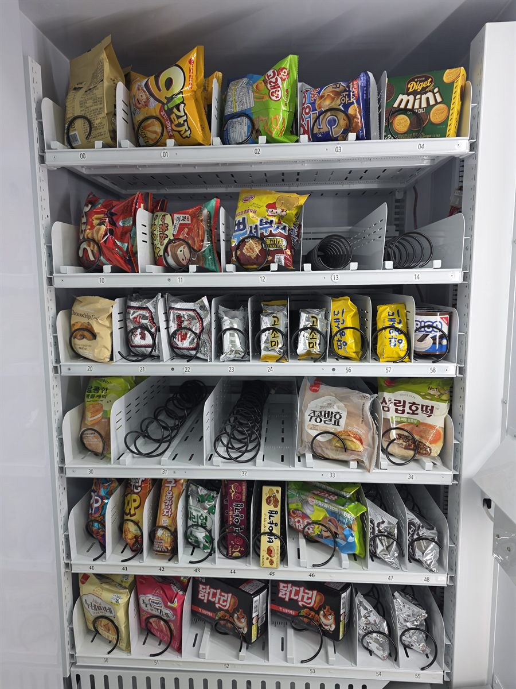

오피스텔 1층에 자판기를 놓겠다고 하시면 저희가 제일 먼저 여쭙는 것은 기계가 아니라 무엇을 팔 것인가입니다. 오피스텔은 아파트와도 사무실과도 다릅니다. 혼자 사는 분이 많고, 들어오는 시간이 제각각이고, 밤 열한 시가 넘어 귀가하는 분이 적지 않습니다. 이 시간대에 편의점까지 걸어 나가는 대신 1층에서 뭔가 하나 집어 올라가는 흐름이 생깁니다. 그래서 음료만 넣은 자판기보다 과자·빵·간편 간식을 함께 넣은 스낵 구성이 오피스텔에서는 더 잘 돕니다. 사진이 그 내부 모습입니다.
자리를 보러 가서 확인한 것은 세 가지였습니다. 첫째는 엘리베이터 홀 동선입니다. 오피스텔 1층은 입구에서 엘리베이터까지가 짧고, 그 사이에 우편함과 택배 보관함이 들어가 있는 경우가 많습니다. 기계를 동선 한가운데 세우면 택배 수레가 지나갈 때마다 긁힙니다. 그래서 엘리베이터를 기다리며 서 있는 자리에서 눈에는 들어오되 걸음에는 안 걸리는 벽면을 골랐습니다. 둘째는 전원입니다. 공용부 콘센트는 청소용으로 하나만 있는 건물이 많고, 그 회로에 다른 것이 이미 물려 있기도 합니다. 분전반에서 이 콘센트가 어느 차단기에 걸려 있는지를 확인하고 단독으로 쓸 수 있는지 봤습니다. 셋째는 소음입니다. 냉장 기능이 들어가면 압축기가 돌면서 소리가 납니다. 1층에 거주 호실이 붙어 있는 구조라면 그 벽에서 떨어뜨리는 것만으로 민원이 반으로 줍니다. 수평은 늘 하던 대로 수평계를 올려 다리를 돌려 잡았습니다.
강서 오피스텔에 맞는 구성
칸 배치는 사진처럼 위아래를 성격이 다르게 짰습니다. 윗칸은 봉지 과자처럼 가볍고 부피가 큰 것을 칸막이 선반에 세워 넣었습니다. 봉지 과자는 스프링 칸에 넣으면 부풀어서 걸리거나 반대로 헐렁해서 안 떨어집니다. 칸막이로 세워 두고 앞에서 밀어 내리는 방식이 훨씬 안정적입니다. 가운데 칸은 비스킷·초코파이류처럼 모양이 일정하고 단단한 것을 스프링에 걸었습니다. 이쪽은 걸림이 거의 없습니다. 아래 칸은 호떡이나 닭다리 간식처럼 박스나 포장이 두꺼운 것을 넣었습니다. 무거운 것을 아래에 두면 기계도 덜 흔들립니다.
처음부터 모든 칸을 꽉 채우지는 않았습니다. 사진에 비어 있는 칸이 보이는 것도 그 이유입니다. 한 달쯤 팔아 보고 안 나가는 품목은 빼고, 잘 나가는 것은 칸을 늘리는 게 재고를 안 썩히는 방법입니다. 특히 오피스텔은 입주 연령대에 따라 팔리는 품목이 꽤 갈립니다. 결제는 카드와 삼성페이·카카오페이·네이버페이를 받고 현금함은 넣지 않았습니다. 잔돈을 채우러 오실 일이 없어집니다. 재고와 매출은 휴대폰에서 바로 확인하고, 어느 칸이 품절인지 알림이 오도록 설치 당일에 맞춰 봤습니다. 채우러 가기 전에 무엇을 몇 개 들고 갈지 집에서 정할 수 있다는 게 무인 운영에서는 생각보다 큰 차이입니다.
오피스텔 스낵 자판기, 좋은 점과 어려운 점
좋은 점부터 적겠습니다. 첫째, 밤에도 팔립니다. 오피스텔은 늦게 들어오는 분이 많아 편의점이 멀수록 1층 자판기의 값어치가 올라갑니다. 둘째, 객단가가 음료보다 높습니다. 과자나 간편 간식은 하나 값이 음료보다 비싼 편이라 같은 대수로도 금액이 더 나옵니다. 셋째, 냉장 품목만 쓸 때보다 전기료 부담이 적은 구성도 가능합니다. 상온 간식 비중을 어떻게 가져가느냐에 따라 달라집니다. 넷째, 입주민 입장에서 건물 편의가 하나 느는 것이라 관리 주체 동의를 받기가 음식점 설치보다 수월한 편입니다.
어려운 점도 솔직히 적습니다. 첫째는 유통기한 관리입니다. 음료와 달리 과자·빵은 날짜가 지나가는 속도가 빠른 품목이 섞여 있습니다. 안 팔리는 칸을 방치하면 유통기한이 먼저 옵니다. 그래서 채우러 가실 때 앞뒤를 바꿔 넣는 습관을 처음에 알려 드립니다. 둘째는 걸림입니다. 봉지 과자를 스프링 칸에 잘못 넣으면 안 떨어지고, 그러면 환불 연락이 옵니다. 위에 적은 대로 품목에 맞는 칸을 쓰는 것이 유일한 예방책입니다. 셋째는 관리 주체 동의입니다. 오피스텔 1층은 공용부라 관리사무소나 입주자대표 쪽 확인이 필요한 건물이 많습니다. 넷째는 첫 달 매출을 보고 판단해야 한다는 점입니다. 같은 강서구 안에서도 세대수와 입주율에 따라 결과가 다릅니다. 처음부터 두 대를 들이기보다 한 대로 한두 달 보고 늘리는 쪽을 권합니다. 다섯째, 겨울과 여름은 팔리는 품목이 바뀌므로 계절마다 구성을 한 번씩 손보셔야 합니다.
강서 무인매장, 이런 자리가 잘 됩니다
강서구는 서울 서남권에서 신축 업무지구와 오래된 주거지가 나란히 붙어 있는 지역입니다. 자판기 자리도 그만큼 성격이 갈립니다. 첫째는 마곡 일대입니다. 마곡지구는 연구·업무 시설이 모여 있고 그 주변으로 오피스텔과 지식산업센터가 촘촘하게 들어서 있어, 출퇴근 시간과 점심시간 흐름이 뚜렷합니다. 둘째는 화곡동 일대의 다세대·원룸 밀집 구역입니다. 1인 가구가 많아 늦은 시간대 수요가 꾸준한 편입니다. 셋째는 김포공항 주변입니다. 공항과 연계된 시설, 물류·정비 쪽 사업장이 있어 교대 근무가 도는 자리가 섞여 있습니다.
그 밖에 문의가 꾸준한 자리는 가양동·등촌동의 아파트 단지 상가, 염창동과 목동 방면 학원가 동선, 발산·우장산 쪽 병원과 상가 건물, 방화동 신축 오피스텔, 그리고 공항대로를 따라 늘어선 사무 시설입니다. 같은 강서라도 마곡처럼 낮에 사람이 몰리는 곳과 화곡처럼 밤에 사람이 들어오는 곳은 넣는 품목이 반대로 갑니다. 그래서 상담 때는 주소보다 그 건물에 사람이 몇 시에 가장 많은지를 먼저 여쭙습니다. 양천구 목동·신정 방면과 영등포 여의도 쪽, 경기 김포 방면은 한 번 나가는 길에 같이 보는 일이 많습니다.
강서 서비스 지역
강서구 — 화곡동 · 등촌동 · 염창동 · 가양동 · 마곡동 · 발산동 · 우장산동 · 공항동 · 방화동 · 과해동 · 오곡동 · 외발산동 · 내발산동
역 — 김포공항역 · 송정역 · 마곡역 · 발산역 · 우장산역 · 화곡역 · 까치산역 · 가양역 · 증미역 · 등촌역 · 염창역 · 양천향교역 · 마곡나루역 · 신방화역 · 공항시장역
주요 시설 — 마곡지구 업무단지 · 김포공항 · 화곡동 상권 · 발산 상가 · 가양동 아파트 단지 · 공항대로 사무 시설
인접 — 양천구(목동 · 신정) · 영등포구(여의도 · 당산) · 구로구 · 경기 김포 · 부천 방면
서울 전역(서남권 · 도심권 · 강남권 · 서북권 · 동북권)과 경기 김포 · 부천 · 고양까지 같은 조건으로 나갑니다.
강서 무인창업, 이렇게 시작하시면 됩니다
설치비는 받지 않습니다. 자리 확인부터 품목 구성, 기계 반입, 카드 결제 연동, 재고 채우는 방법까지 한 번에 안내해 드립니다. 오피스텔 1층처럼 공용 공간을 쓰는 자리는 기계보다 동의를 받는 일이 먼저인 경우가 많으니, 관리사무소가 있는 건물이면 미리 말씀을 넣어 두시는 편이 빠릅니다. 견적 전에 확인하는 것은 전기 위치·벽면 폭·반입 경로 세 가지입니다. 오피스텔은 입구에 턱이나 회전문이 있는 경우가 있어 기계가 들어가는 폭을 미리 봅니다. 자리 사진 한 장과 대략의 벽면 폭만 보내 주셔도 들어갈지 아닐지는 미리 봐 드립니다.
비용은 구입이 렌탈보다 유리한 편입니다. 렌탈료를 몇 년 내는 것보다 처음에 사 두는 쪽이 총액이 낮게 나오는 경우가 많고, 오래 쓸수록 차이가 벌어집니다. 다만 건물 동의가 한시적이거나 자리를 옮길 가능성이 있는 경우라면 렌탈을 함께 비교해 보시는 편이 낫습니다. 구성별 36개월 총비용은 구입 vs 렌탈 비교 가이드에 정리해 두었습니다.
관련 검색어: 강서무인자판기 · 강서무인자판기설치 · 강서스낵자판기 · 마곡자판기 · 화곡동자판기
강서 무인자판기 설치 상담
세워 둘 자리 사진 한 장만 보내 주셔도 됩니다. 남는 벽과 전기 위치, 엘리베이터 홀 동선과 반입 경로를 보고 들어갈 수 있는 크기와 대수를 먼저 봐 드린 뒤 견적을 보내 드립니다.
※ 사진은 픽포스가 시공한 설치 사례이며, 글에 적힌 지역의 현장 사진은 아닙니다. 자판기 구성과 품목은 자리와 업종에 따라 달라지며, 건물 공용 공간 설치는 관리 주체 동의와 전기 위치, 통행 폭 확보 조건을 현장에서 먼저 확인합니다. 정확한 금액은 견적서로 안내드립니다.